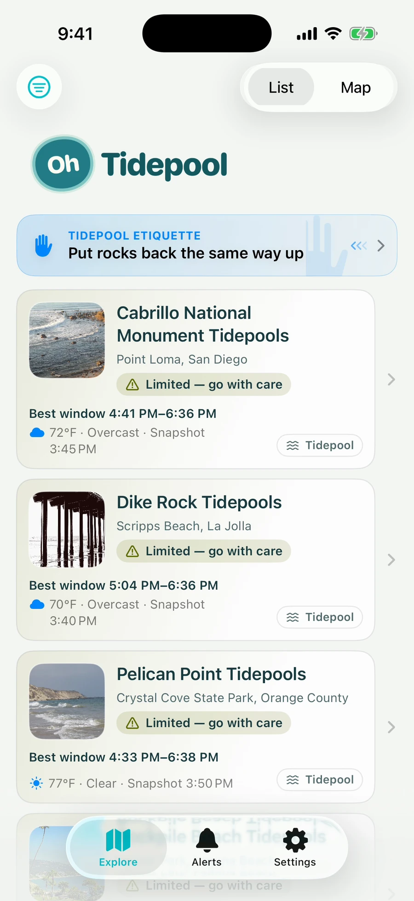
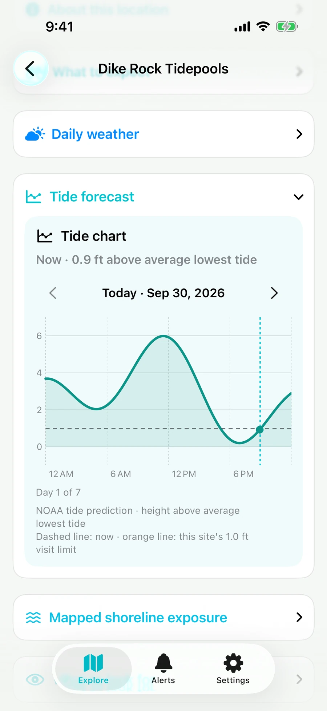
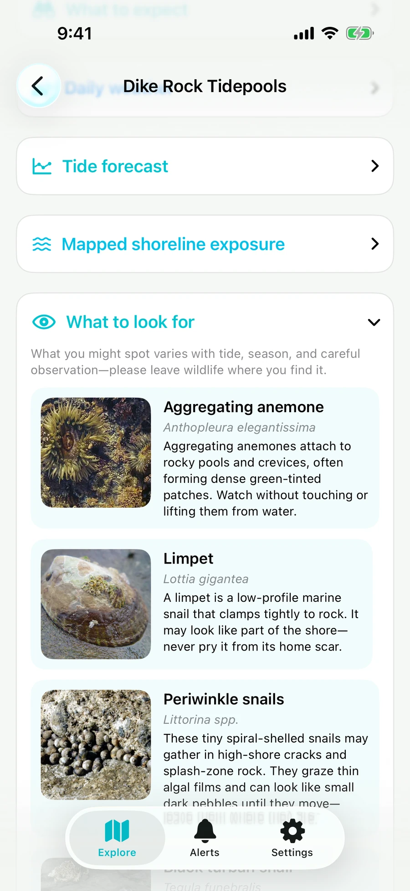

A tip while you browse
Reviewed tips sit in the Explore header. Swipe for another, swipe back, or tap to read why it matters and follow its source.
FREE IPHONE APP · PUBLIC TESTFLIGHT BETA


Actual app screens · recorded 30 September 2026.
Illustrative conditions, not today's forecast. Tap a screen for the full-size image.
Oh Tidepool is your pocket companion for Southern California's rocky shores. Find a place to explore, understand the tide, and learn about the life between the rocks.
Try the free TestFlight betaMade for curiosity, learning, and thoughtful visits.
Public testing on iPhone, not an App Store release.
WHAT YOU CAN USE IT FOR
The app brings planning and learning together, so you can arrive curious and leave the shore as you found it.
Browse 14 mapped sites in San Diego and Orange counties, in a list or on a map. Tidepool guides and Discovery sites are clearly distinguished.
Read tide predictions, charts, and daylight exposure windows alongside surf, weather, and site hazards. Four Tidepool sites have their own reviewed tide guides; Discovery sites use a nearby gauge and a borrowed guide, marked Best estimate.
Open What to look for at a site to learn the names and habits of shoreline animals. The pocket field guide helps you recognize what you notice, without promising what you'll see.
Discover 68 reviewed tips about tidepool life and care. Swipe for another, or open the full explanation and its source.
Choose optional plan-visit alerts that follow tide and weather, with surf mentioned in the notification. Alerts are a planning tool, not permission to enter the shore.
The Explore list labels cards Tidepool or Discovery site. It scrolls through site cards, including Pelican Point, then switches to a map of the sites. The conditions shown belong to the recording date.
IN THE APP / THE FIELD GUIDE
An animal you might have walked past becomes something to notice. The field guide helps you learn about the shore while keeping its inhabitants where they belong.
Open What to look for at your chosen shore. Animal names, descriptions, and photographs sit beside your visit information, with reminders to observe without disturbing them.
See the app's anemone photo viewField-guide entries describe shoreline life. They are not a sightings forecast.

IN THE APP / LEARN AND PLAN
Reviewed tips sit in the Explore header. Swipe for another, swipe back, or tap to read why it matters and follow its source.
Choose locations and your availability. Alerts use tide and weather criteria; the notification also names forecast surf as context, not a promise about conditions.
Notifications are optional. Treat an alert as a reminder to recheck the shore, not permission to enter it.
The Explore header starts on LOOK CLOSER with a tip about shore crabs. A swipe changes to TIDEPOOL ETIQUETTE; a swipe back restores the previous tip. Tapping opens the full text, WHY IT MATTERS, and Open the source.
FREE, AND MADE FOR LEARNING
Oh Tidepool is a free app for learning about the shore. Its purpose is outreach: help people understand the tide, recognize shoreline life, and develop habits that leave tidepools undisturbed.
A planning aid, not an official safety decision. Surf above a site's guide is a caution to go with care; a high tide can close the exposure window. Follow posted rules and closures, watch the water, and turn back when the shore doesn't match your plan.
OH TIDEPOOL · FREE IPHONE BETA
Try the site list, tide charts, field guide, reviewed tips, and optional alerts. Oh Tidepool is in public testing on TestFlight, not an App Store release.
Join the free TestFlight betaInstall Apple's free TestFlight app, then open the join link on your iPhone. No invitation or Oh Tidepool account needed.